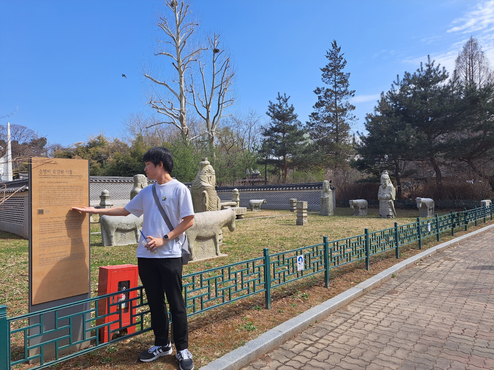

2024년 봄, 서울의 길을 걷다!
나를 소개합니다!

이름: 변동진
출생년도: 2002년
학번: 21학번
MBTI: ISTP
전공: 컴퓨터공학부
짝꿍을 소개합니다!

이름: 정일혁
이름: 정일혁
출생년도: 2000년
학번: 21학번
MBTI: ISFP
전공: 컴퓨터공학부
심층 인터뷰!
Q. 요즘 가장 큰 고민거리는?
A. 재수학원을 다니다보니
예전 밝고 활발했던 성격이
많이 사라진 것 같다.
Q. 어떻게 극복해 나갈 것인지?
A. 조금 더 적극적으로 활동하고
자신감을 가지기 위해
여러 활동들을 해볼 예정이다.
20문 20답
Q. 생일은 언제인가요?
A. 2000년 5월 3일입니다
A. 2000년 5월 3일입니다
Q. 혈액형은 무엇인가요?
A. A형입니다!
A. A형입니다!
Q. MBTI가 뭐에요?
A. ISFP입니다
A. ISFP입니다
Q. 취미가 있을까요?
A. 큐브 맞추기, 영어 공부, 롤 대회 시청, 쇼츠 보기, 공상하기
A. 큐브 맞추기, 영어 공부, 롤 대회 시청, 쇼츠 보기, 공상하기
Q. 자신의 보물 1호는?
A. 가족
A. 가족
Q. 한식 vs 일식 vs 양식 vs 중식
A. 양식
A. 양식
Q. 지금 당장 여행가고 싶은 곳은?
A. 대만, 우리나라와 문화가 비슷한 곳을 선호한다
A. 대만, 우리나라와 문화가 비슷한 곳을 선호한다
Q. 겨울 vs 여름
A. 여름, 땀나는게 너무 싫다
A. 여름, 땀나는게 너무 싫다
Q. 해보고싶은 동아리 있나요?
A. 영어 회화 동아리를 해보고 싶다
A. 영어 회화 동아리를 해보고 싶다
Q. 컴공이 아니었다면 어떤 학과를 갔을까요?
A. 공대 쪽, 특히 전기전자공학부가 좋을거 같다
A. 공대 쪽, 특히 전기전자공학부가 좋을거 같다
Q. 당장 소원 한가지를 이룰 수 있다면?
A. 시간을 멈추고 싶다. 아무것도 신경 안쓰고 잠시 쉬고 싶다
A. 시간을 멈추고 싶다. 아무것도 신경 안쓰고 잠시 쉬고 싶다
Q. 돼지고기 vs 소고기
A. 돼지고기, 소고기는 느끼할 때가 있다
A. 돼지고기, 소고기는 느끼할 때가 있다
Q. 건대를 선택한 이유는?
A. 서울에 위치하고 시설이 좋아서!
A. 서울에 위치하고 시설이 좋아서!
Q. 컴공을 선택한 이유는?
A. 취직에 도움이 될 거 같아서
A. 취직에 도움이 될 거 같아서
Q. 가장 선호하는 색은?
A. 검정색이 무난하고 좋다
A. 검정색이 무난하고 좋다
Q. 좋아하는 연예인 있나요?
A. 피식대학, 뉴진스 민지
A. 피식대학, 뉴진스 민지
Q. 자신의 장점이 있다면?
A. 자신의 부족한 면을 잘 인정하는 것이 장점이라고 생각한다
A. 자신의 부족한 면을 잘 인정하는 것이 장점이라고 생각한다
Q. 자신의 단점이 있다면?
A. 게으르다
A. 게으르다
Q. 이상형 말해주세요!
A. 털털하고 사차원인 면이 있고 소신 있고 여우상인 사람
A. 털털하고 사차원인 면이 있고 소신 있고 여우상인 사람
Q. 올해 다짐 한가지!
A. 생산적으로 살아 보겠다. 특히 게임을 작작 하고 싶다.
A. 생산적으로 살아 보겠다. 특히 게임을 작작 하고 싶다.
이곳을 소개합니다!
서울특별시 광진구에 위치한 서울 어린이대공원은 식물원, 동물원, 놀이동산 등 다양한 시설들과 체험공간이 가득한 어린이 가족테마공원입니다.
왜 이곳을 다녀왔나요?
- 산책하기에 충분히 넓은 공간
- 다양한 볼거리를 제공하는 동,식물원 등의 시설
- 가족들끼리 공원을 거니는 모습을 보며 힐링
- 학교 근처에 위치해있고 교통이 편리하다는 지리적 장점
이렇게 다녀오세요!
추천하는 준비물
물
산책할 때의 필수품 물!
날씨도 점점 더워지고 햇살도 강해지는 요즘
즐거운 산책을 위해선 물을 챙겨가시는걸 추천합니다!
산책할 때의 필수품 물!
날씨도 점점 더워지고 햇살도 강해지는 요즘
즐거운 산책을 위해선 물을 챙겨가시는걸 추천합니다!
편한 운동화
편한게 최고야~!
발 아프면 걷는 내내 찡그려진다구요.
편하고 시원한 운동화 추천합니다!
편한게 최고야~!
발 아프면 걷는 내내 찡그려진다구요.
편하고 시원한 운동화 추천합니다!
돈
먹거리, 볼거리, 놀거리...
이거 다 제대로 즐기려면
돈이 필요하겠죠?!
먹거리, 볼거리, 놀거리...
이거 다 제대로 즐기려면
돈이 필요하겠죠?!
*미리 체크해두기
날씨
가기 전에 날씨 체크는 기본입니다!
기분 좋게 가서 비 맞고 돌아올 순 없잖아요!
가기 전에 날씨 체크는 기본입니다!
기분 좋게 가서 비 맞고 돌아올 순 없잖아요!
코스
어린이대공원은 입구가 7개 정도로 매우 많아요!
자신이 어떤 입구로 어떤 코스를 가는게 효율적일지,
가보고싶은 곳이 있으면 그곳을 중점으로
멋지게 짜보는걸 추천드려요!
어린이대공원은 입구가 7개 정도로 매우 많아요!
자신이 어떤 입구로 어떤 코스를 가는게 효율적일지,
가보고싶은 곳이 있으면 그곳을 중점으로
멋지게 짜보는걸 추천드려요!
산책 경로
 우리는 아차산역에서 만나
우리는 아차산역에서 만나근처 김치찌개 식당으로 향했다.
기본맵기로 시켰는데도 꽤 매웠다.
맵찔이들에겐 다른 곳을 추천한다..
그래도 맛은 있었다 bb
 카페에서 가볍게 음료한잔하며 이야기를 나눈 뒤
카페에서 가볍게 음료한잔하며 이야기를 나눈 뒤어린이대공원 후문으로 향했다.
어린이대공원은 입구가 많아 코스가 매우 다양하다
우리는 그 중에서도 후문에서 출발하였다

 입구쪽의 유니버셜 아트센터를 지나
입구쪽의 유니버셜 아트센터를 지나팔각당을 마주했다.
동물원에서 여러 동물들을 구경하며 산책했다
 순명비 유강원 석물에 도착했다.
순명비 유강원 석물에 도착했다.
정문쪽에 도착한 우리는 중앙 길을 이용하여 되돌아갔고
다시 출발지에 거의 다다랐을 즈음, 놀이공원을 발견했다.
규모도 생각보다 컸고 아이들이 뛰노는 모습을 보니 힐링되는 느낌이었다.
다시 출발지에 거의 다다랐을 즈음, 놀이공원을 발견했다.
규모도 생각보다 컸고 아이들이 뛰노는 모습을 보니 힐링되는 느낌이었다.